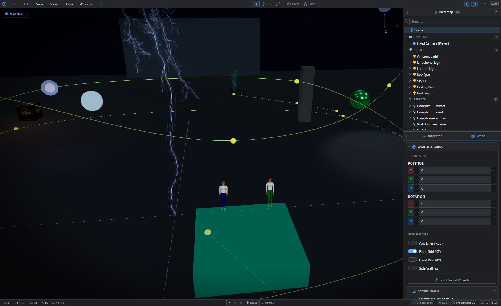
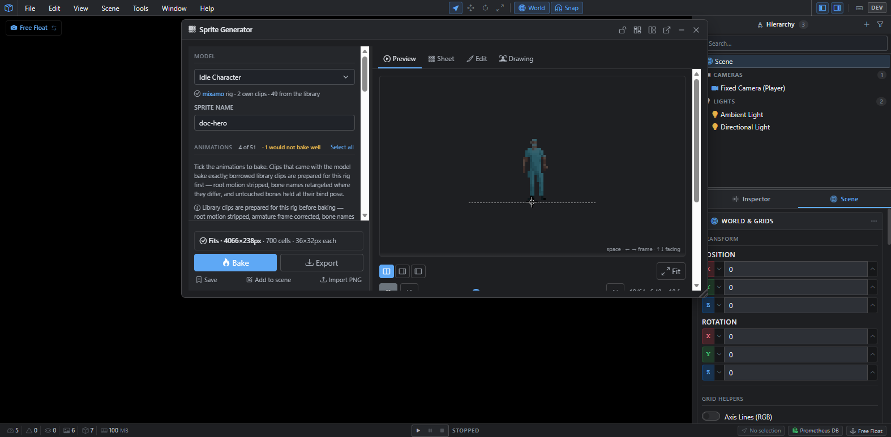
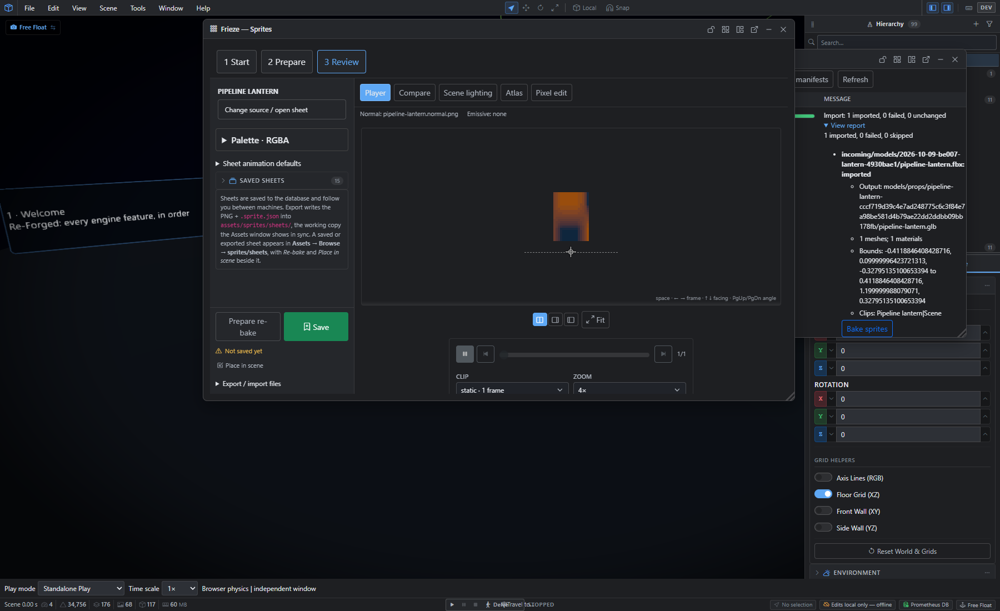
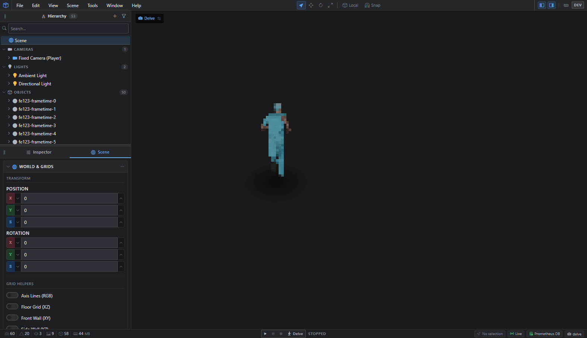
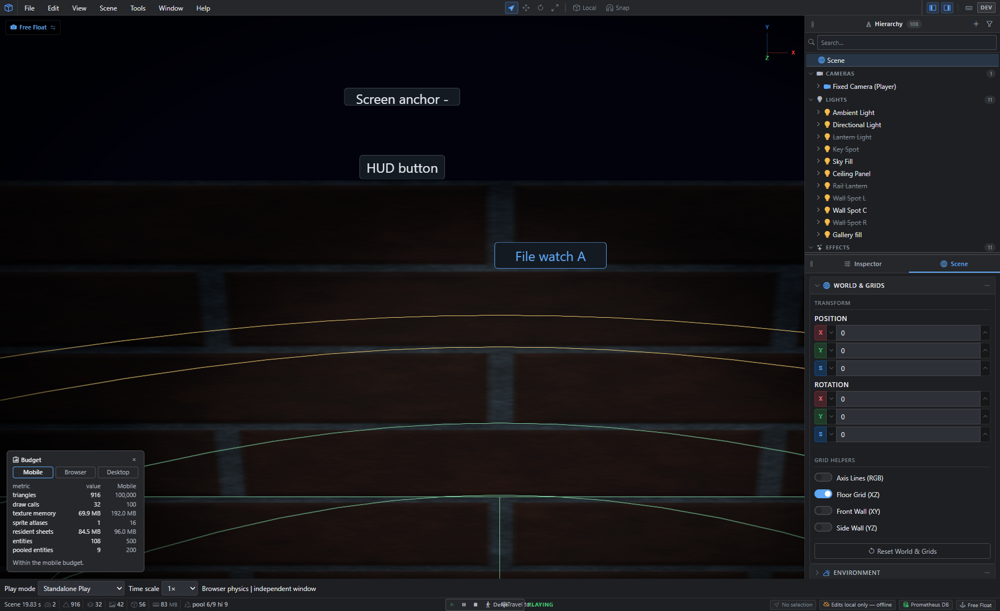

Catching up: two months of Prometheus
Contents
This devlog has been quiet, but the project hasn't. Since September Prometheus has taken a little over 1,800 commits. This post catches up on all of it and ends with why development is pausing for a rebuild. From now on I'll post as things happen instead of saving it all up.
Quick reminder of the goal: Prometheus is a custom 2.5D engine with a browser-based editor. The world is fully 3D; the characters and props in it are 2D pixel-art sprites. Everything is being built toward Forgotten Memories, Endless Abyss, an online MMO set in an endless dungeon that reshapes itself around how its players behave. The game itself is still a future milestone. Right now the work is the engine and the tools.
The editor and the server


The editor is a remote session into a backend that owns the simulation. The browser renders locally and trades state snapshots with the server rather than streaming video. In September that hit its first real milestone: two browser tabs editing the same scene at once, with undo carrying across them and nothing lost when a tab refreshes mid-edit. The same simulation package runs on the server in the editor and locally in an exported game, so what you test is what ships.
On top of that there's now most of what you'd expect from a scene editor: a hierarchy and inspector, a four-pane quad view, lights and shadows, materials, post-processing, particle effects (campfires with flames, smoke and embers, wall torches, lightning), Rapier physics, and camera rails for fly-throughs. Scenes keep a version history you can preview and roll back, and the editor recovers unsaved edits after a crash.
Every feature that lands also goes into one showcase scene, Re-Forged, which has a guided tour that walks through the engine feature by feature. It's the scene in the screenshot above, and it's how I check that new work actually reaches the screen and doesn't just pass its tests.
Frieze: from 3D models to pixel sprites


Every sprite in the game starts life as a real 3D model. Frieze imports the model, borrows animation clips from a shared library and retargets them to the model's rig, then captures it from several angles and bakes the result into pixel-art sprite sheets. It has its own palettes, a pixel editor for touch-ups, and batch re-baking when a source changes.


The sprites also bake a normal map, so a flat sprite catches light from the 3D scene around it: a torch on its left lights its left side. The whole route, from importing a model to baking it, publishing it and placing it in a scene, is now one workflow with a readable report at each step.
Walking around: Delve


Delve is the first mode where you actually walk around: a third-person camera at a 35° tilt following a sprite character, with the billboards turning to face the camera and switching animation frames as they move. The first stress test put fifty animated billboards in a scene and held a mean of 12.7 ms per frame on my desktop. That's a dev machine, not a phone, so it's a baseline, not a verdict.
The gameplay foundation
None of this is gameplay yet, but most of what gameplay will stand on now exists:
- Input: keyboard, mouse and gamepad, with rebinding.
- UI: widgets and HUD panels with anchoring, focus and keyboard/gamepad navigation.
- Scripting: script files edited in your own editor and watched from disk, with type checking, readable errors and shared scripts.
- AI: behaviour trees with a shared blackboard, sensing and perception, navigation, and crowds that send a couple of hundred agents to one goal along a shared flow field.
- Systems: physics queries and collision layers, an event bus, a game clock, sprite animation states, dialogue, localisation, entity pooling and a component model.
Built for phones


The game is aimed at mobile, so the editor measures every scene against a device budget: triangles, draw calls, texture memory, sprite sheets and entity counts, each checked against mobile, browser and desktop limits. The world is split into regions that load and unload around the camera, so distant areas give their memory back and come back intact when you return. A scene can also be exported as a static build that runs with no backend at all.
What's next: a pause to rebuild
Two decisions have changed the plan. The editor is moving into a desktop app built on Electron, and the platform is becoming plugin-based, so features plug into a core rather than being built into it. Together those mean a full rewrite. So development is on pause while I rework: new designs in Figma, and the platform redesigned from the plugin perspective from the ground up.
The engine work is more or less done. What it needs now is more thought about how to make the rest of the game a reality on top of it. The biggest piece of that thinking is the living world. The dungeon won't be a complete map hidden under fog; ground that nobody has reached doesn't exist yet. Terrain is generated as players, and monsters, actually travel into it. A monster wandering off on its own extends the world along the path it walks, without revealing that ground to anyone. What each player has discovered stays private to them, while the terrain itself is shared by everyone.
Three stores, one launch
Beyond the editor, the game still needs a mobile version for the App Store and Google Play, and a Steam version for PC. All three will release at the same time. That's a substantial undertaking for a solo developer.
Not entirely solo
My teenagers are studying engineering and will, I hope, help me design and build the game world. A few friends are taking on the music and ambience, playing the first vertical slice as they write for it. That slice is the next real milestone: maybe later this year, maybe early 2027, we'll have something to show for all the hard work. There's a lot to do until then, so stand by.